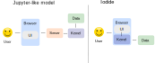

class: center, middle # MicroBJ: in-browser data analytics using Iodide and OfficeJS Roman Yurchak <div style="height:100px"></div> .pull-left[ *Industry 4.0 meetup, <span style="white-space: nowrap">12 November 2018</span>* ] .pull-right[ ] --- ## Data analytics and decision support tools for Industry 4.0 .left-column[ - Increasing importance of analytics and decision support tools - Industry 4.0 convergence to a decentralized ecosystem - Human - machine interaction with interactive dashboards and notebooks ] .right-column[ ] .credits[ Decentralized decision support for intelligent manufacturing in Industry 4.0 (2017) ] --- ## Architecture <img src='./iodide_architecture_part0.svg' style='width: 100%;'/> <p style='height: 100px'></p> .credits[ Adapted from: <span style="white-space: nowrap">jupyter.readthedocs.io/en/latest/architecture/how_jupyter_ipython_work.html#notebooks</span> ] --- ## Architecture  <p style='height: 100px'></p> .credits[ Adapted from: <span style="white-space: nowrap">jupyter.readthedocs.io/en/latest/architecture/how_jupyter_ipython_work.html#notebooks</span> ] --- # Easier sharing of notebooks .left-column[ ### Jupyter like model **Local** Install conda, Jupyter, then project-specific dependencies **Remote** Deploy in a container (binder etc.) ] -- .right-column[ ### Iodide model **Local** Deploy to a static webserver <span style="white-space: nowrap">Just open it in your browser</span> **Remote** Share a single file containing data, report, code and dependencies Just open it in your browser ] --- # Pyodide .slide-items[ .left-column[ <p style='margin: 5px 0;'>The Python “language plugin” for Iodide</p> - usable without Iodide as well <p style='margin: 5px 0'>Upstream CPython</p> - numpy, pandas, matplotlib <p style='margin: 5px 0'>WebAssembly</p> - A fast way to run compiled code on the web <p style='margin: 5px 0'>Related projects</p> - pypyjs - brython ] .right-column[ <img src='./pyodide_logos.svg' /> ] ] --- # Supported packages --- # Supported packages --- # Iodide future directions ### Language interoperability <img src='./language_interperability.png' style='width: 100%;'/> --- # Iodide included in the OfficeJS App Store .left-column[ - online and offline use - synchronization with Dropbox, WebDAV, ERP5 possible with JIO library - can be embedded into any business application ] <div class='right-column' style='width: 40%; margin-left: 10%; '> <div style="text-align: center"> <h3 style='margin-bottom: 20px'>OfficeJS</h3> HTML5 Productivity App Store </div> </div> --- # MicroBJ <p style='margin: 0'>Goal: provide an easy to deploy business intelligence tool that is integrated with ERP5</p> .small[ - inventory reporting - best sales reporting - inventory prevision ] <p style='margin: 0'>Constraints</p> .small[ - China network prevents easy use of WebSockets or WebRTC - China cloud is 20x more expensive than in Europe ] <p style='margin: 0;'> Solution </p> .small[ - run in the browser - use JIO to download data from ERP5 to OfficeJS Iodide ] --- # Development .left-column[ <img src='mozilla-logo-bw-rgb.png' style='width: 70%; margin: 30px 10px;'/> <b>Iodide / Pyodide projects</b> Brendan Colloran <br /> Hamilton Ulmer <br /> William Lachance <br /> Michael Droettboom <br /> ... ] .right-column[ <b>OfficeJs integration</b> Richard Szczerba <br /> ... ] --- class: center, middle <h3>Thank you!</h3> <h3>Questions?</h3> <div style="height:150px"></div>